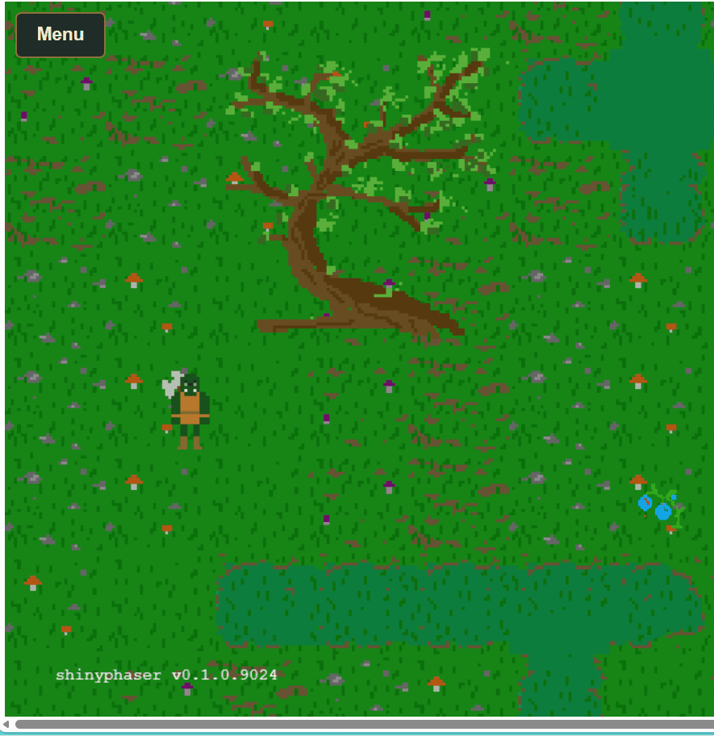

Walk behind scenery and block its footprint
Source:vignettes/scenery-and-collision.Rmd
scenery-and-collision.RmdIn a top-down game, a tree has two jobs: its canopy can hide the hero, while its trunk blocks movement. A bush works the same way. Use separate objects for appearance and collision so the player can walk behind the foliage without walking through its base.

| Part | Purpose | shinyphaser API |
|---|---|---|
| Tree or bush image | Draw the whole object, including foliage |
add_image(), set_depth()
|
| Invisible footprint | Block a small area on the ground |
add_collision_rectangle(),
add_collider()
|
| Hero’s feet | Determine where the hero stands | set_body_size() |
| Depth ordering | Draw the hero behind or in front as it moves | set_depth_by_y() |
The complete implementation lives in
inst/examples/swamps_rpg. With the current development
version installed, run it from the repository root:
shiny::runApp("inst/examples/swamps_rpg")Draw the image and block only its base
The following snippets use the Swamps RPG resource path registered by
that example. Put the R setup inside its server, after binding
game to the session and creating hero. For
another app, register your own image directory first.
tree_1.png is 200 by 400 pixels. Its image is centered,
so placing its center at base_y - 200 puts the bottom at
base_y. The depth uses that ground position, rather than
the center of the tall image.
base_x <- 600
base_y <- 1000
tree <- game$add_image(
"tree", "swamps-rpg-assets/terrain/mushroom_swamps/tree_1.png",
x = base_x, y = base_y - 400 / 2
)
tree$set_depth(base_y)
# A short, narrow rectangle around the trunk's base, not the entire canopy.
game$add_collision_rectangle(
"tree_footprint", x = base_x, y = base_y - 12,
width = 64, height = 24
)
game$add_collider("hero", "tree_footprint")The invisible rectangle has a static physics body. The collider prevents the hero from crossing it from any direction. The image itself has no physics body: overlapping the canopy is allowed. Use the same pattern for bushes, with a footprint sized to the part of the bush that touches the ground.
An object is fully passable if you omit its footprint and collider. Hiding an image does not remove its separate footprint; manage both objects together when hiding, removing, or switching maps.
Give the hero a foot-sized collision body
The Orc has 100 by 100 pixel animation frames. Using the entire frame for collision would prevent the hero from getting close to the foliage. Set a 32 by 18 pixel body, offset 34 pixels from the frame’s left and 72 from its top:
hero$set_body_size(width = 32, height = 18, offset_x = 34, offset_y = 72)Sizes and offsets are measured in unscaled frame pixels. Adjust them for your own artwork. The call is queued if the sprite is still loading.
Change depth as the hero walks
set_depth() sets a fixed drawing depth from R. Larger
values draw in front. The tree stays at base_y, but the
moving hero needs its depth refreshed from its ground position. Enable
that behavior with:
hero$set_depth_by_y(offset = 40)The runtime now updates depth to hero.y + 40 each frame
in the browser. For the centered 100px Orc frame, the frame starts at
hero.y - 50 and the feet end at pixel 90 within the frame,
giving the 40px offset. This value is in world pixels and should match
the artwork’s ground contact point. No custom JavaScript or Shiny
position observer is needed.
When the hero’s feet are above the tree’s base, its depth is smaller, so the canopy draws over the hero. Below the base, the hero draws in front. The footprint blocks movement at the trunk independently of drawing order. This is often called Y sorting.
Apply set_depth_by_y() to enemies and NPCs too if they
should participate in the same ordering. Repeating the call changes the
offset without installing another update listener. To stop automatic
sorting and keep the last depth:
hero$set_depth_by_y(enabled = FALSE)Calling hero$set_depth(20) also stops sorting and sets a
fixed depth. Listeners are removed when a sprite is destroyed or its
scene shuts down.
Keep screen-fixed text and health bars at a depth above the world, for example:
status$set_scroll_factor(0)
status$set_depth(10000)For a 6400-pixel-tall world, 10000 leaves the HUD above all ground-position depths. The full example applies these R methods to the hero, enemies, and NPCs, and sets a fixed HUD depth above them.